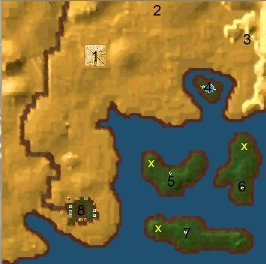

Places: Dragonsand

| 1. | Tomb of VARN |
| 2. | The pirates treasure, this is where you come when you have read all of the obelisks |
| 3. | Obelisk #6 |
| 4. | Shrine of Gods (+20 to all stats permanently!) NW wall will take you to the NWC dungeon. |
| 5. | +50 Hit Points |
| 6. | +10 to all resistance permanent |
| 7. | +10 to seven primary stats |
| 8. | The Tent Village of Dragonsands A pedestal for the Place Statues Quest |
| X | Nice treasure chests. All trapped |
Leave us a message at: mgrounds@hotmail.com